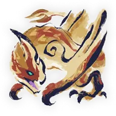

千刃龙
起飞、踢击、落地切换得很快，刃鳞会造成裂伤。全部招式都能普通防御。

大型飞龙种。全身覆盖着如刀刃般锋利的鳞片，由此得名“千刃龙”。它有很强的领地意识，生性凶猛好斗。它还具备优越的飞行能力与强劲的后腿，以此攻击其它大型怪物，不断进行激烈的争斗而闻名。有报告称它还能发射全身的刃鳞，从而让对手造成裂伤。（游戏内介绍）长枪：能不能挡
全部招式都能普通防御，不需要防御强化（拆包数据）。
弱点
肉质数值越高越软，粗体是该列最高值。长枪看「斩」，弓看「弹」。
| 部位 | 斩（长枪） | 弹（弓） |
|---|---|---|
| 头部 | 55 | 45 |
| 颈部 | 35 | 30 |
| 腹部 | 35 | 25 |
| 背部 | 30 | 20 |
| 翼臂 | 30 | 20 |
| 翼 | 35 | 25 |
| 腿 | 50 | 45 |
| 尾巴 | 40 | 35 |
属性：雷 25、冰 15、水 10、龙 5、火 0（各属性在最有效部位的值）。现在的长枪和弓都是无属性武器，这一行留作以后换武器参考。
异常状态初始耐性：毒 150、麻痹 300、睡眠 150、爆破 70（数值越低越容易累积，用弓的瓶时参考）。
状态变化
发怒、疲劳的攻击倍率、动作速度和持续时间来自拆包数据（MHRice）。手机上每种状态显示成一张卡片。
| 状态 | 怎么判断 | 变化 | 长枪 | 弓 |
|---|---|---|---|---|
| 平常 | — | — | 全部招式都能防；贴后腿打 | 打头部、腿 |
| 发怒 | 全身刃鳞竖起 | 攻击 ×1.1、动作速度 ×1.05，持续 150 秒；多出带刃鳞的攻击 | 照样都能防，注意多出来的刃鳞 | 刃鳞变多，保持移动 |
| 疲劳 | — | 动作速度 ×0.9，持续 60 秒 | — | — |
| 起飞中 | 拍翅离地 | 起飞、攻击、落地是一整套，不会长时间悬停 | 防住俯冲，趁它落地打腿 | 用闪光球打下来，要提前准备 |
危险招式
- 高空急袭飞踢：颈部刃鳞抖动，拍两下翅膀飞到高处，往后一收再俯冲踢下。这是它伤害最高的一招，被打中后不能翔虫受身。看完前摇往正侧面闪。
- 低空回旋踢：飞起后绕到侧面或身后低空踢，命中会把人按倒，随后射出一排刃鳞追击。往前后方向闪；被打中立刻翔虫受身离开。
- 后跳两连踢：一定连踢两下，每下都会重新对准你。连闪两次，第二下之后再反击。
- 刃鳞射击：先从头部、再从尾巴射出刃鳞。一直移动，别让刃鳞堆在一起；落在地上的刃鳞碰到也会裂伤。
长枪打法
- 贴着后腿打，脚下相对安全；在它身下会被脚爪抓，往侧面躲。
- 急袭飞踢落地后有大破绽：举盾挡下俯冲，趁它落地打腿。
- 两连踢挡完第二下再出手；闪光球把它打下来后也是输出机会。
现在的配装见 长枪配装：MR 3★。
弓打法
- 弹肉质最高的是头部和腿。
- 它飞起时扔闪光球能打下来，但它不会长时间悬停，要提前准备。
- 减气瓶、爆破瓶效果好；麻痹的初始耐性很高（300），不推荐。
现在的配装见 弓配装：MR 3★。
特殊机制
- 裂伤：被刃鳞打中后进入裂伤，之后的动作会累积伤害，再挨打时一次扣掉。原地不动（蹲下最快）、吃刺身鱼或烤熟的肉可以解除。
- 闪光球、落穴陷阱、麻痹陷阱有效，音爆弹无效。
- 头部、左右翼、左右腿可以破坏；尾巴只能用斩击切断。
会出现的 MR 4★ 任务
- 千刃来袭（沙原）
- 废神社三狂徒（废神社）
- 碎尸万段，碾为微尘（城塞高地）
- 身披黑衣的龙（城塞高地）
- 我等荒野三凶龙（沙原）
- “优美剧烈的移动术？”之卷（废神社）
资料来源
招式描述只采用多个攻略站说法一致的内容；招式能否防御以 Kiranico 拆包数据为准。